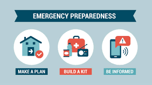

Learn
Explore resources and training materials to prepare for and respond to disasters effectively.

Disaster Preparedness Guide
A guide covering emergency plans, essential supplies, and safety steps before, during, and after a disaster.
Read Guide
First Aid Training
Learn CPR, wound care, burn treatment, and recognizing medical emergencies.
Access Training
Volunteer Best Practices
Guidelines for effective volunteering, safety measures, and roles during disaster relief.
Learn More